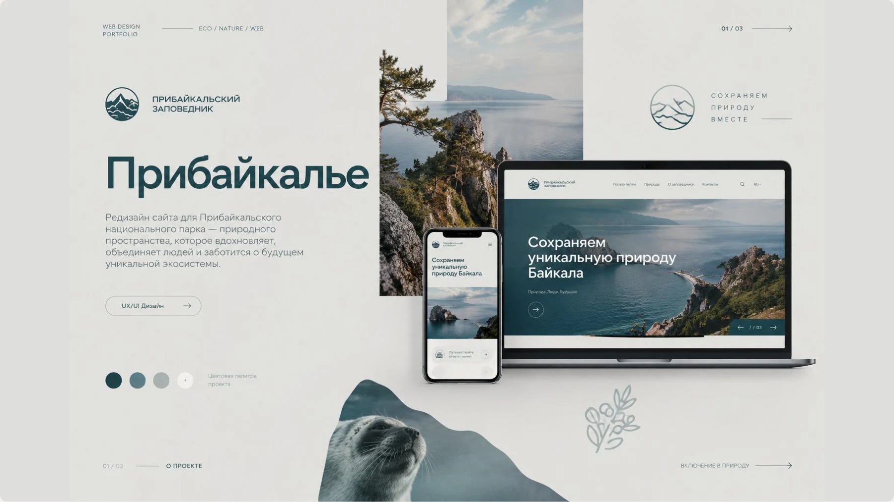
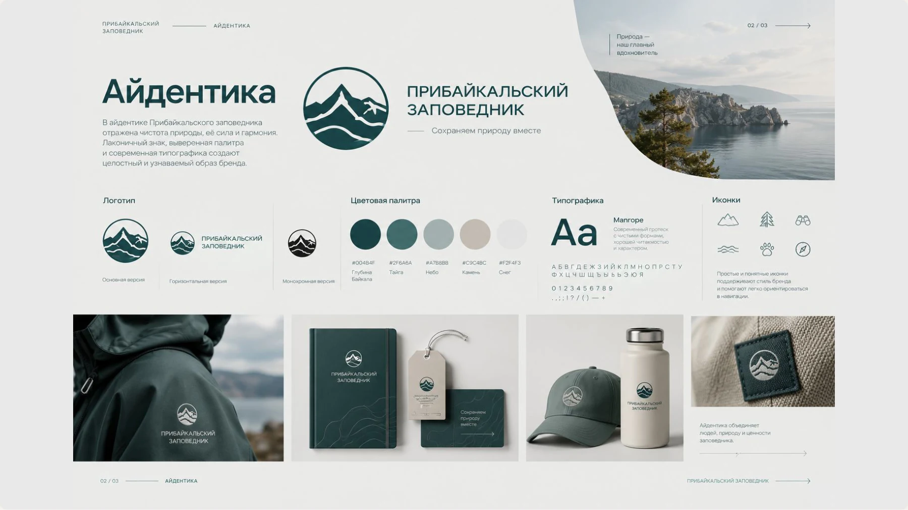
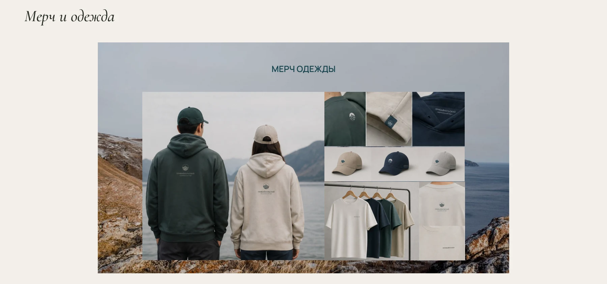
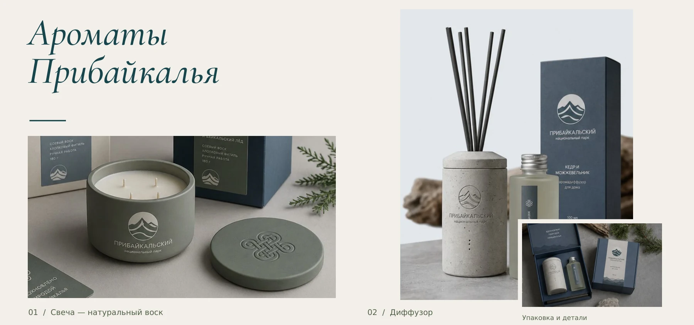
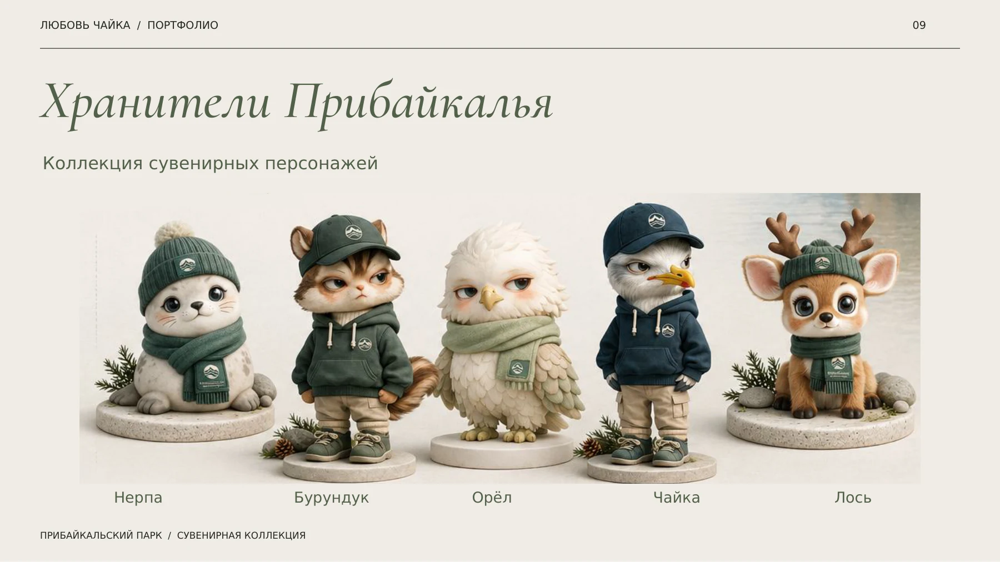

Проект 01 / Айдентика · Веб-дизайн
Учебный проектПрибайкалье
Комплексная концепция для Прибайкальского национального парка: от знака и орнамента до сайта, мерча и сувениров.

Идея и визуальный язык
Характер проекта
в каждой детали
Горы, волны и природные оттенки складываются в узнаваемый образ территории. Орнамент связывает современную графику с культурой Прибайкалья.
Что в проекте
- Знак, цветовая палитра и типографика
- Декоративный орнамент и фирменные носители
- Концепция сайта и коллекция сувениров
Детали проекта
Нажмите на изображение, чтобы рассмотреть ближе ↗










Есть похожая задача?
Давайте обсудим